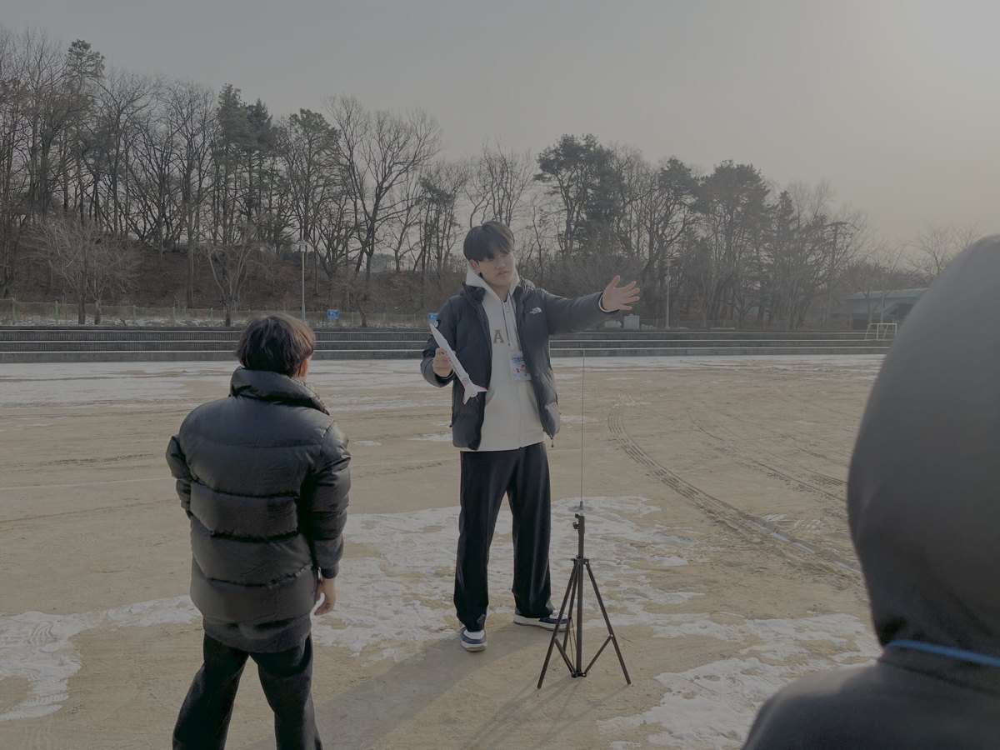

Mentor, instructor
SR (Social Responsibility) Camp
A five-day learning camp for 4th to 7th graders from low-income and multicultural families. Mentored students and taught a model rocket launch class.
One student who had given up on becoming a scientist started dreaming about it again after the class and one-on-one talks.